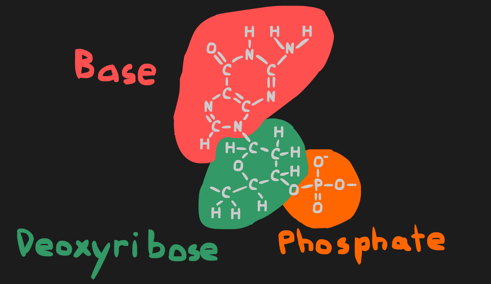

Genetics are how your traits are defined. Each cell in your body has a copy of the same exact DNA. Genes are passed down from your parents to you, and from you to your kids.
DNA is the molecule that determines the proteins formed during protein synthesis and thus constructs the base of the human body and allows for differences between parents and children.

DNA has a backbone of sugar and phosphates on either side of the molecule. In the center, there are pairs of four nitrogenous bases, adenineadenine, thymine, cytosine, and guanine. These are represendaed by the letteres A, T, C, and G repectively. A always matches up with T, and C always matches up with G. The backbone is composed of an alternating chain of deoxyribose, a sugar, and phosephate groups.
One deoxyribose mollecule, one phosphate group, and one base together form what is called a nucleotide. Nucleotides are considered to be the subunit of DNA.
DNA replication occurs during cell division, since there need to be two copies of the DNA. DNA polymerase and other proteins facilitate the whole process. The DNA is unzipped and nucleotides floating around in the nucleus are grabbed and matched up to one end of the DNA. Then the DNA is rezipped and the half-DNA strand that was produced is completed by matching A to T and C to G.
Protein synthesis is the process of reading DNA and using the information stored in the order of the bases to create specific proteins. Protein synthesis has two parts, transcription and translation.
Transcription is the process of reading the DNA and generating mRNA. This process takes place in the nucleus. The DNA is unzipped by RNA polymerase and nucleotides are grabbed from the surrounding fluid to create a matching RNA strand. Wherever there would have been a T there is now a U (short for uracil) instead. This RNA strand is called mRNA, for messenger RNA.
Translation is the process of reading the mRNA and generating a protein. This process takes place in the cytoplasm at a ribosome. The mRNA is put into the ribosome. Floating around in the cytoplasm is tRNA. tRNA is a closed loop of RNA in a specific shape. At the bottom is a 3 base sequence, known as an anticodon, which matches up U to A, C to G with the 3 base codons on the mRNA. On the top pf the tRNA is an amino acid, the building block for proteins. The ribosome goes through the mRNA 3 bases at a time, and finds a tRNA with the matching anticodon. tRNA with a specific anticodon will only have the amino acid that corresponds to the codon it matches up with. These codon to amino acid correlations are well known, and can easily be found online. The tRNA enters the ribosome, drops off the amino acid, then leaves. Then the ribosome moves on to the next codon. Every time an amino acid is dropped off it bonds with the previous amino acid. As this peptide chain is forming it starts to fold. The last codon of the mRNA is a stop codon, which makes the ribosome release the protein.